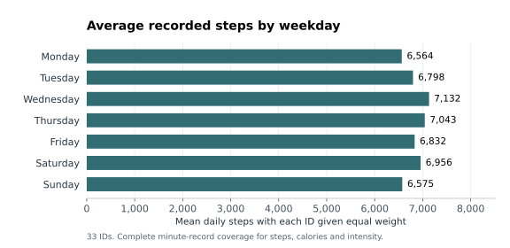
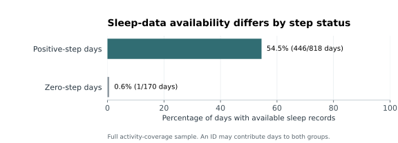

Ask
What could these records tell a marketing team?
The case-study brief asks an analyst to explore smart-device data and suggest opportunities for Bellabeat, a maker of wellness products for women. I focused on Leaf and its companion app because the scenario describes activity and sleep tracking as part of the offering.
My business task was to identify recorded usage patterns, examine their limitations and translate the findings into experiments Bellabeat could run with its own customers.
- What patterns appear in activity, sleep and recording coverage?
- Which patterns could inform hypotheses about potential customers?
- What messages or engagement initiatives should Bellabeat test?
Prepare and process
One row needed one clear meaning.
The 11 supplied files contained daily, hourly, minute and second-level records. I aggregated each source by ID and calendar date before joining, producing 1,060 daily records with 54 fields. Dates present in any source were retained.
| Sample | Daily records | Distinct IDs |
|---|---|---|
| Merged table | 1,060 | 35 |
| Complete activity-record coverage | 988 | 33 |
| Available sleep records | 467 | 23 |
| Matched activity and sleep | 447 | 23 |
- Removed 525 exact duplicate sleep rows before aggregation.
- Kept overlapping daily, hourly and minute totals in separate fields to avoid double counting.
- Preserved missing measurements as missing and retained coverage counts.
- Required 1,440 minute records in each activity stream for the main activity sample. This checks export coverage; it does not establish all-day wear.
- Retained zero-step days in the main analysis and used positive-step days as a sensitivity check.
The public source description mentions 30 consenting users, while the supplied exports contain 35 IDs. I reported the discrepancy and treated IDs as analytical units. Gender and Bellabeat customer status are not established.
Analyze
Small choices can change an average.
Across the 988 complete-coverage records, the mean was 6,889.7 steps per day and the median was 6,419. Giving every ID equal weight produced 6,836.3 steps. Light activity represented approximately 85% of recorded active minutes.
All full-coverage days. Each daily record has equal weight.
Explore the sensitivity check. The reason for a zero-step record is unknown, so both estimates belong in the analysis.
Removing 170 zero-step days raised mean steps by 20.8%, to 8,321.5. The same 33 IDs remained. This was a substantial sensitivity, so I kept both estimates visible.

Wednesday had the highest mean steps and Monday the lowest. The paired weekday/weekend comparison was modest: 6,870.5 versus 6,769.7 steps, a difference of 100.8 steps, or about 1.5%.
The step–calorie correlation was 0.650 across all complete-coverage days and 0.556 on positive-step days. Fitbit's calorie estimates already incorporate activity and resting energy needs, so this describes related device outputs.
Analyze
The available sleep data told a selective story.
Sleep records were available on 447 of 988 complete-activity days (45.2%). Availability differed sharply by recorded step status.

The matched sleep sample averaged 8,191.4 steps, compared with 6,889.7 in the full activity sample. This selection matters when interpreting the relationship between activity and recorded sleep.
| Averaging method | Recorded asleep minutes | Recorded asleep hours |
|---|---|---|
| Each observed day has equal weight | 391.9 | 6.53 |
| Each ID has equal weight | 359.2 | 5.99 |
Both estimates use the 467 calendar days with available sleep records from 23 IDs. Coverage ranged from 1 to 33 days per ID; five IDs had only 1–4 recorded days.
Sleep minutes were grouped by calendar date, so overnight episodes can span dates. These values describe recorded sleep per observed calendar day. They do not estimate complete nights or the prevalence of insufficient sleep.
The same-day step–sleep correlation was weak: −0.113 across 447 matched days and −0.104 across 446 positive-step matched days. I treated these as descriptive associations rather than evidence of a causal sleep effect.
Share and act
Turn findings into questions a business can test.
The dataset contains no advertising responses, purchases or subscription outcomes. My recommendations are hypotheses for first-party testing.
- Test everyday-movement messaging. Light activity dominates the recorded active minutes. Compare a landing-page message about achievable daily movement with a generic product message. Measure purchases per assigned visitor.
- Improve tracking guidance during onboarding. Compare the current experience with a short setup and syncing guide. Use recording criteria appropriate to the actual Leaf data stream and measure data availability on eligible user-days.
- Test personalised progress summaries. Recorded activity differs across IDs. Compare a summary based on a valid personal baseline and chosen goal with a generic message. Measure app return rate at 28 days.
- Explain recorded sleep clearly. Test a clearer introduction to the sleep summary and measure whether eligible users view it within 14 days.
What limits the conclusions?
- The data are historical, small and self-selected, with no verified gender or Bellabeat customer demographics.
- Complete exported records are not verified wear time. Zero-step days can have different causes.
- Sleep recording is uneven and calendar-day aggregation does not preserve whole-night duration.
- Repeated days from one ID are not independent participants. No causal effects or significance tests were established.
- Current customer data and randomised experiments would be needed to evaluate marketing performance.
Reproduce and review
Inspect the work behind the findings.
Each SQL file contains complete numbered queries. Replace YOUR_PROJECT with your own BigQuery project ID before running them. The repository includes aggregate chart data and scripts for preparing the original public exports.
- 01 / Data checksImport counts, merge keys, coverage and quality flags
- 02 / Activity analysisQueries 1–7, including weighting and zero-step sensitivity
- 03 / Recorded sleep analysisQueries 8–12, including coverage and matched-day analysis
- Full case-study reportSix pages with charts, methods, recommendations and limitations
- Analysis filesSQL, aggregate chart data, figures, code and README
Sources
- Bellabeat case-study brief supplied through the Google Data Analytics capstone.
- Furberg R, Brinton J, Keating M, Ortiz A. Crowd-sourced Fitbit datasets, 2016.
- Fitabase Fitbit Data Dictionary, version dated 16 May 2025.
My main takeaway: a useful recommendation needs both a clear finding and an honest account of how the records were selected.
Back to my portfolio